id="js_content" style="">
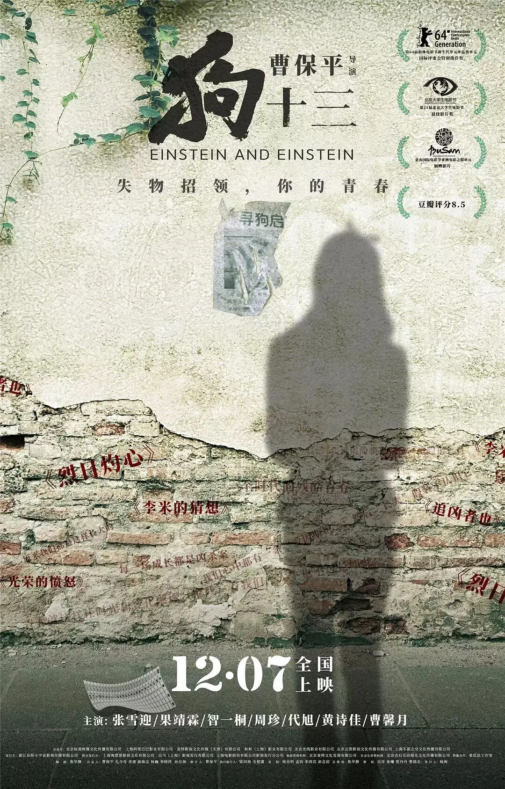
一条狗算什么？
对于大人来说，它只是哄孩子开心的宠物。
对于三四岁的小孩来说，它只是一个会叫会跑的玩具。
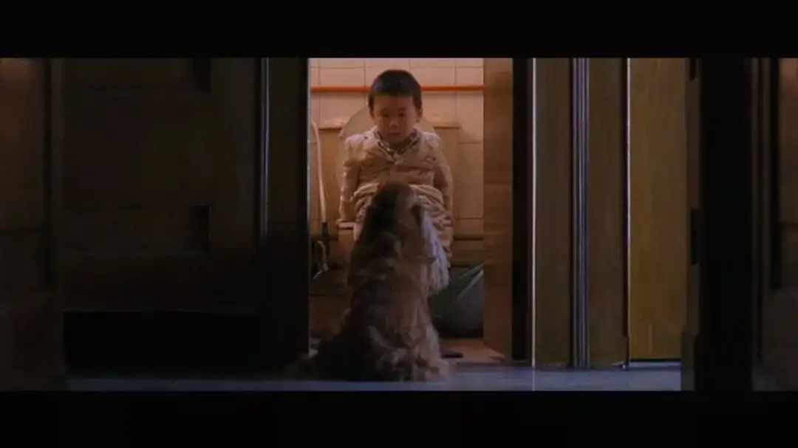
而对于一个离异家庭的13岁少女来说，那条狗就是她自己，总被人漠视、孤零零地蹲坐在角落中。
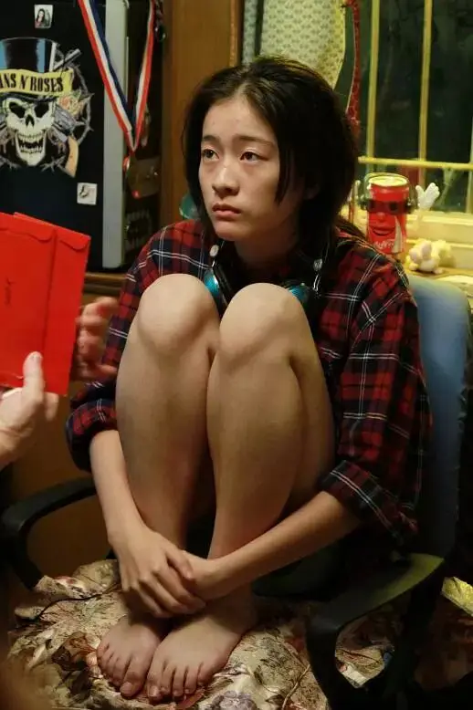
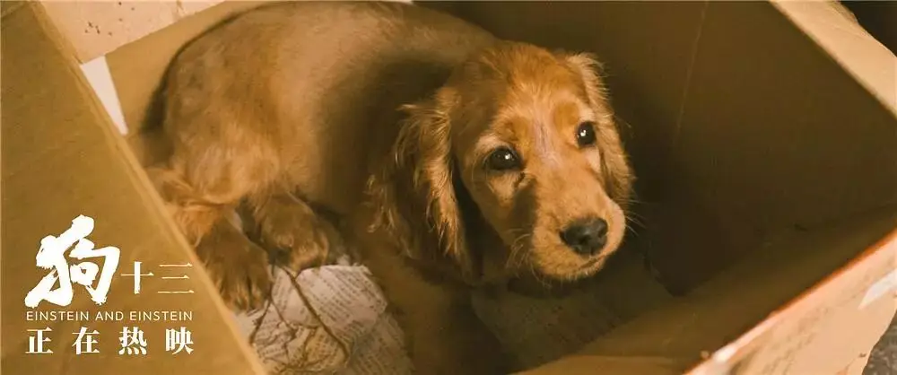
因此，狗丢了，对于大人来说，并不是什么大事，而对于这个13岁女孩来说就是整个世界的崩塌。
大人永远无法明白女孩为什么哭的那么伤心，他们也不理解女孩为什么那么倔非要连夜寻狗。
不就是宠物狗走丢了，那就再给你弄一条一模一样的。
女孩哭着说，这不是原来的那只，我就要原来的狗。
“怎么就这么不懂事”，大人无可奈何，对女孩一顿揍，事情就这么摆平了。
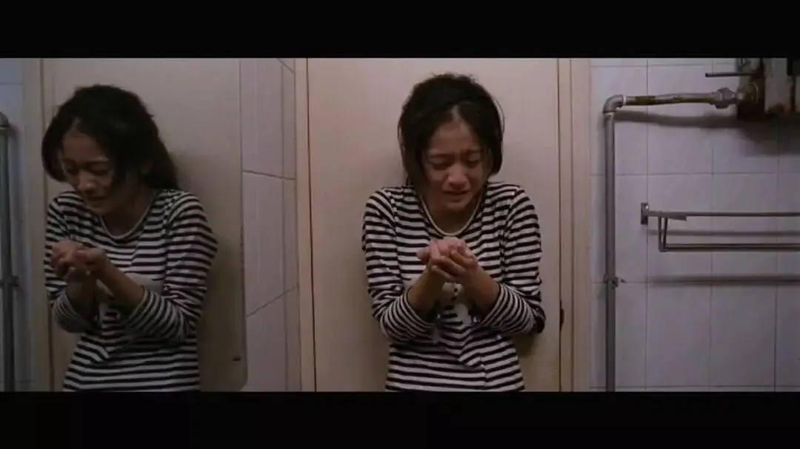
这件事后，女孩也变了，不再哭泣，不再任性，她终于成为了大人眼中懂事的孩子。
就是他们将一碗热喷喷的狗肉端在女孩面前，女孩不仅笑着吃了下去，还非常礼貌地说了句谢谢......
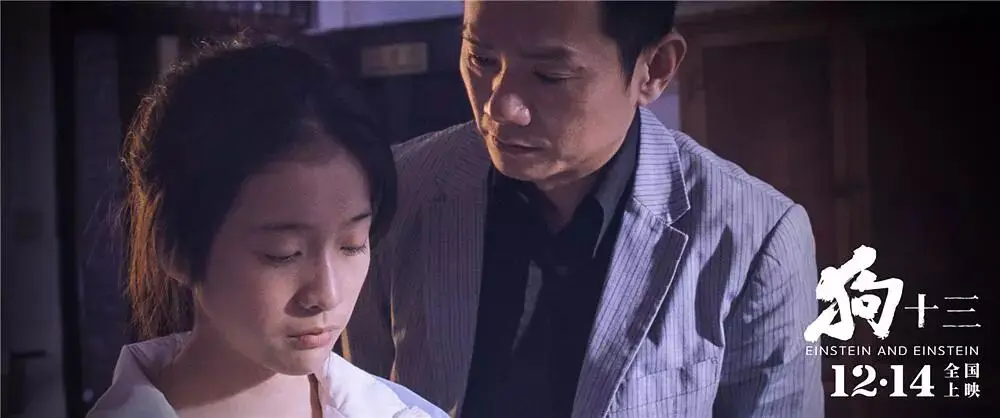
这就是电影《狗十三》所讲的青春，一个赤裸裸、令人心悸的“成长”故事，也正是这部电影被禁五年的原因：太过真实。
的确，第一个画面开始，这部作品就展现出一种国产电影难有的现实主义气质，主角李玩素面朝天、额头上还泛着青春痘，丝毫看不到要用颜值和荷尔蒙来博人眼球的浮夸影子。
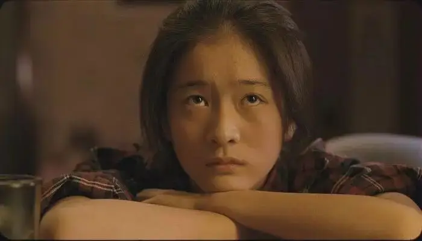
紧接着地道的方言、真实的家庭布景、熟悉的日常对白....整部电影的感觉非常真实，非常对。
更难能可贵的是，导演曹保平借着这个13岁女孩的成长经历折射出了关于家庭、社会和教育的问题，但他并没有急着去批判，而只是提出问题、真实反映现状，将思考留给了观众。
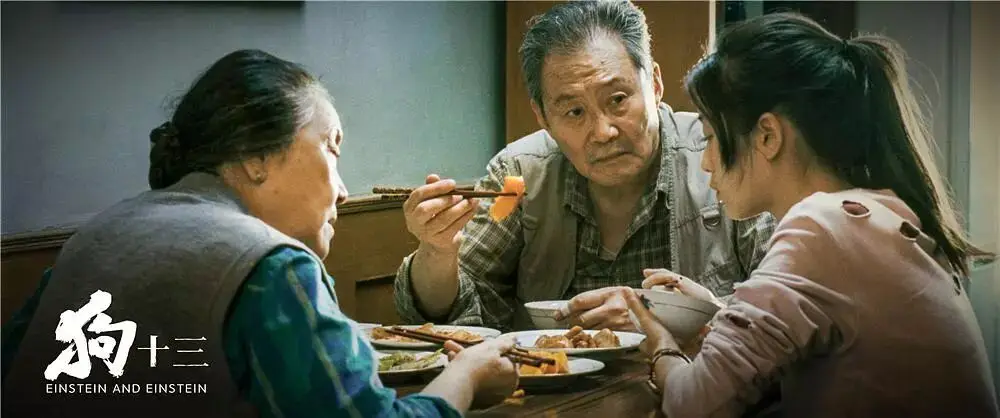
-01-
同一个人在不同年龄阶段对价值的认定是不同的。
在小孩面前，一个塑料瓶比一百元钞票更有价值，等她再长大一些，一个朋友要比一幢北上广的房子更重要，成年后，钞票、房子、事业可能远比朋友更重要....
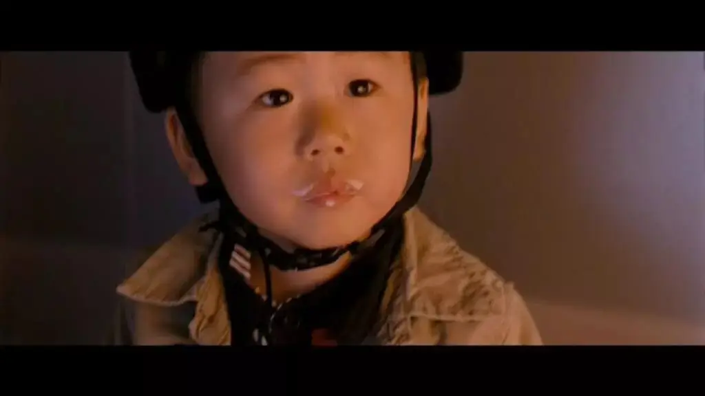
如果你观察一下身边的孩子，你会发现大家对于价值的追求会变得越来越社会化，越来越实用主义，这种变化与一个人所处的家庭和社会有着深刻的联系。
在一个正常的社会中，处于下一个阶段的人会尊重处于前一阶段的人，你不能觉得钞票更有价值，就强硬将一个宝宝手中的纸团换成钞票。
那是一种没有关爱、缺乏尊重的僭越。
在《狗十三》中，这样的僭越到处都是，李玩喜欢物理，爸爸觉得要把英语学好才能上个好大学，于是硬将她拉到英语角。
爸爸告诉李玩不能喝酒，可在吹牛、拍马屁的饭局中，爸爸却让李玩给别人敬酒。
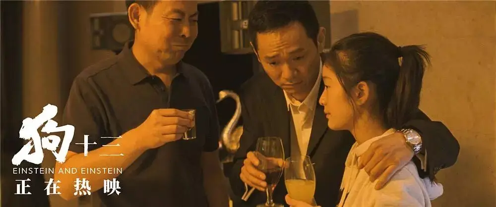
李玩视自己的狗为最珍贵的朋友，丢失后，家人为了哄她，便买了一个样貌差不多的狗骗她说这就是李玩丢失的狗。
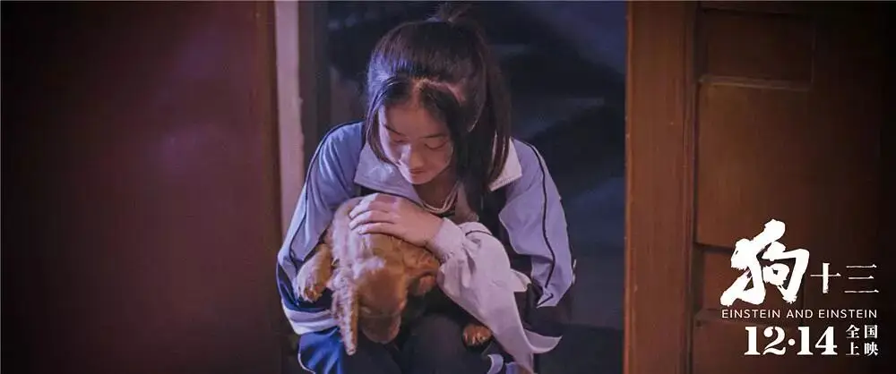
一个谎言导致了一连串的谎言，而这堆谎言成为了大人留在李玩心中的一大笔坏账。
李玩对家人失望透顶开始闹脾气，最后爸爸用暴力让李玩强行接受了这个谎言。
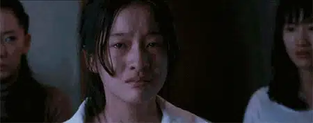
这样的僭越不仅存在于李玩的家庭中，还出现在学校的课堂上，一只蝙蝠闯入教室，学生们充满好奇、欢呼雀跃。
忽然，随着一声巨响，蝙蝠被英语老师用书拍死在地，老师淡定地告诉大家，可以收回心了，接着念单词。
就这样，老师用他为人师表的权威傲慢地僭越了属于那个年纪孩子们的好奇心。
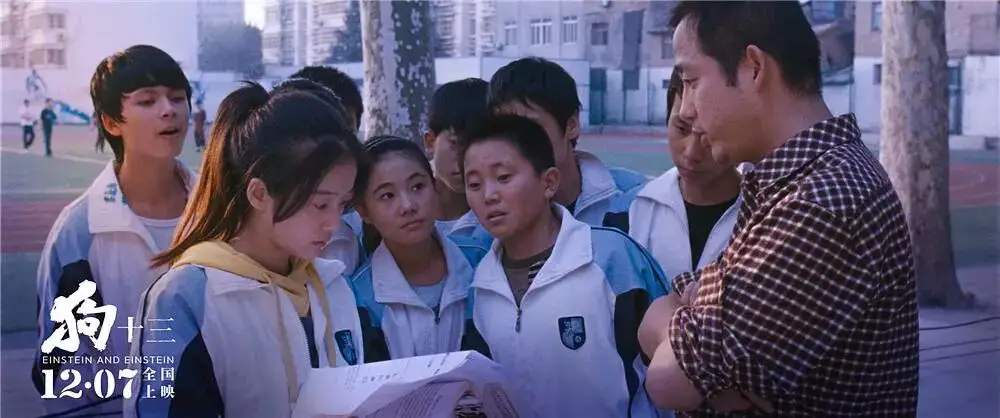
看着拍死在地的“蝙蝠”，李玩若有所悟，她明白抗争是无用的，躁累了，那就只能浅吟。
喜欢读《时间简史》的她只能用双重宇宙来安慰自己：
在这个宇宙之外，一定还有无数个同样的宇宙，包含我们所有可能性的集合。这样，没有完成的事就会在某个宇宙里被完成，错误的选择也会在某个宇宙里被纠正。
所以，当李玩最后在街上碰到自己丢失的狗时，表姐兴奋地告诉她，这就是你丢失的狗，终于找到了。
可是李玩却说表姐认错了，事后表姐不解地问李玩，你为什么不承认呢。
李玩低声说，“我刚才好怕它认识我向我扑过来 ，幸好没有”。
李玩明白把狗要回来了又能如何，还不是会被殴打、遗忘甚至送到狗肉店，还不如就让它跟着别人，说不定在平行的另一个家庭中，小狗可以更加幸福。
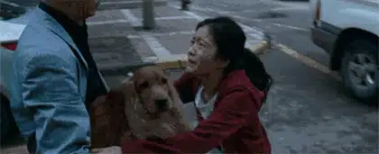
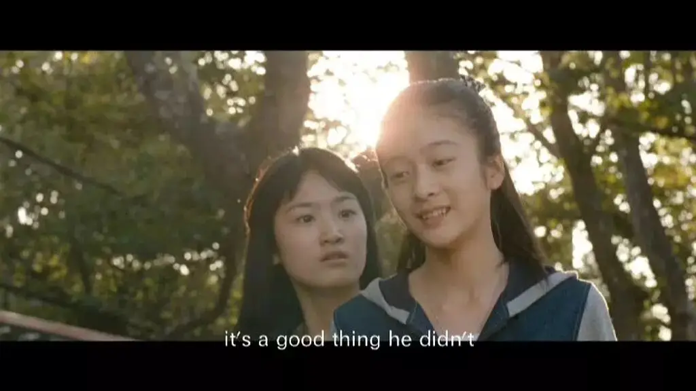
哀莫大于心死，李玩终于妥协了、懂事了，她没有像以前那样自我、任性，她开始为别人着想，开始收敛自己的情绪，像一条狗一样主动躲在边缘和角落里。
这让家人很开心，这个姑娘终于可以让人省心了，可他们怎能明白李玩吃下那碗狗肉时的苦涩和绝望。
早早懂事的孩子背后都有着属于他们自己的悲凉和无奈，他们只能躲在一处暗自流泪。
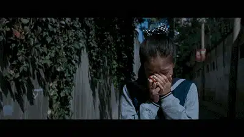
-02-
此前，我们看到了很多第五代导演拍的属于他们文革一代的伤痕青春，他们经历了一段充满苦难的历史。
新一代人所经历的在他们面前仿佛不值一提，可是拥有丰富物质的我们未必就比年长一代幸福。
贾樟柯曾说：
我不认为守在电视边、被父母锁在屋里的孩子比阳光下挥汗收麦的知青幸福。每个人有每个人的为题，一代人有一代人的苦恼，没什么高低之分，对待“苦难”也需要有平等精神。
过去第五代的青春片中总是充满了曲折离奇，他们习惯神话过去的苦难，仿佛没有经历过大风大浪就不配谈什么成长和青春。
这种“神话苦难”的惯性一直影响到了年青一代的导演，所以一些作品为了营造这种曲折，总是喜欢以堕胎、失恋来刻画青春和成长，仿佛女孩没有经历过这些就不会真正成长。
这些矫揉造作的情节令人作呕。
《狗十三》的出现令人振奋，它是我一直期待的作品，剧本里藏了很多东西，它拍出了真正属于80后、90后的青春。
要知道，在这个麻木、冷漠、功利的时代里能够静下心来捕捉到散于家庭、学校各个角落的生活碎片，并能够构建起青春成长的轨迹，这一点要比拍一个充满传奇经历的故事难上加难。
我们太习以为常身边的一切，以至于忽略和错置了太多的东西。
我们的父母习惯于重男轻女、习惯于对孩子撒谎吹牛，我们的教育习惯于假大空和极端功利，习惯于扭曲天性和意识形态。
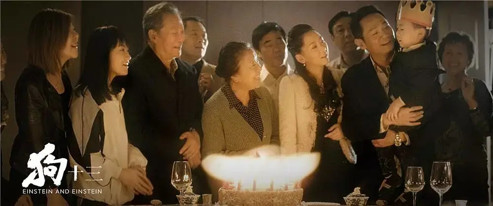
当我们的孩子走过起初的懵懂、之后的反抗、最后也习惯于身边的一切时，我们的子子辈辈都不可避免地陷入到泥潭中。
电影中有一处细思极恐的细节，爸爸得知李玩获得物理比赛第一名后非常高兴，他在车上情不自禁地唱着“无产阶级文化大革命，嘿！就是好！就是好！就是好！”
这首歌几乎是他无意识中唱出来的，以至于他都笑着说“不知怎么突然就想起这首歌了”
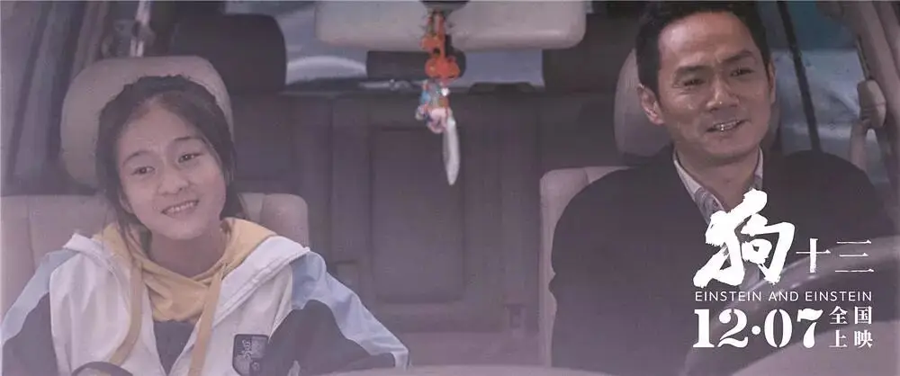
一瞬间，我们窥见了父权背后的专制阴霾，这种潜藏于父亲青春年少时的暴力随时可能喷涌而出。
李玩此前正是被这份专横的暴力灼伤而变得了“乖乖女”。
试想一下，被功利化、谎言、暴力所伤的李玩将来有一天为人母亲时，她的悲剧也可能会成为另一个孩子的悲剧。
这正是这部电影的警示价值。
电影最后，对成人世界失望透顶的李玩给观众留下了一个非常狠的问题：你见过真正的大人么？
我想这既是一个拷问，又是主创的希望，如果我们的社会不能塑造出真正的大人，我们就不能拥有正常的小孩，而没有正常的小孩，他们就不会成长为真正的大人。
这部电影着眼于家庭，着眼于孩子的成长，看上去是一个很不起眼、习以为常的点，但却很踏实地抓到了我们国家的痛处：
我们没有健全的家庭和教育，所以我们的社会很魔幻！
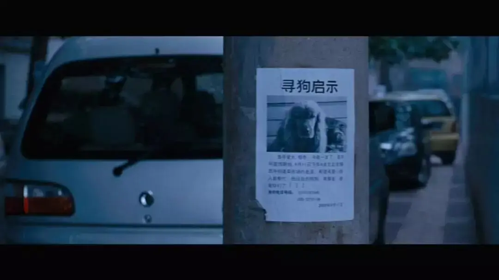
素材征集公告
2018年即将结束，我的微信收藏空间早已爆满，翻看一年里收藏的内容，顿时百感交集，2018年的“冬天”特别“寒冷”，这一年发生了太多太多不寻常的公共事件，很多事情现在已经不能提起。
但是处于其中的人和事不应该被我们遗忘，因为遗忘就是背叛，因此，我在接下来的半个月中会整理这一年发生重要事件的照片和视频，并对这些素材进行混剪，希望将他们镌刻在视频中。
我自己了解的事情有限，需要大家的力量，为此，特向大家征集今年你认为值得关注事件相关的图片和视频，为了保证混剪的质量，希望大家尽量提供高清格式的图片和视频。
大家可通过以下方式将图片、视频分享给我：
1、直接将新闻链接发至留言区。
2、可以将整理好的内容打包发送至邮箱：932506033@qq.com
3、如果内容较多，也可以上传到个人百度网盘，然后分享链接至留言区。
感谢大家的支持。
这里没有挑逗你眼目情欲的小鲜肉
也没有挑动你肉体情欲的段子
更没有膨胀你今生骄傲的鸡血
我们只在乎那些最质朴真诚的作品
在那里我们才能恢复真正的想象力
我们也坚信这才是我们真正需要的

ID:Six_hundred_hits
长按二维码，一键关注
【六百击】
-END-
电影评论
尽情分享朋友圈

苹果打赏通道
小提示：文末广告是腾讯配送广告，内容与本号无关，但您的每次点击（无需反复点）都会给平台带来几毛收益，欢迎您点击支持六百击。